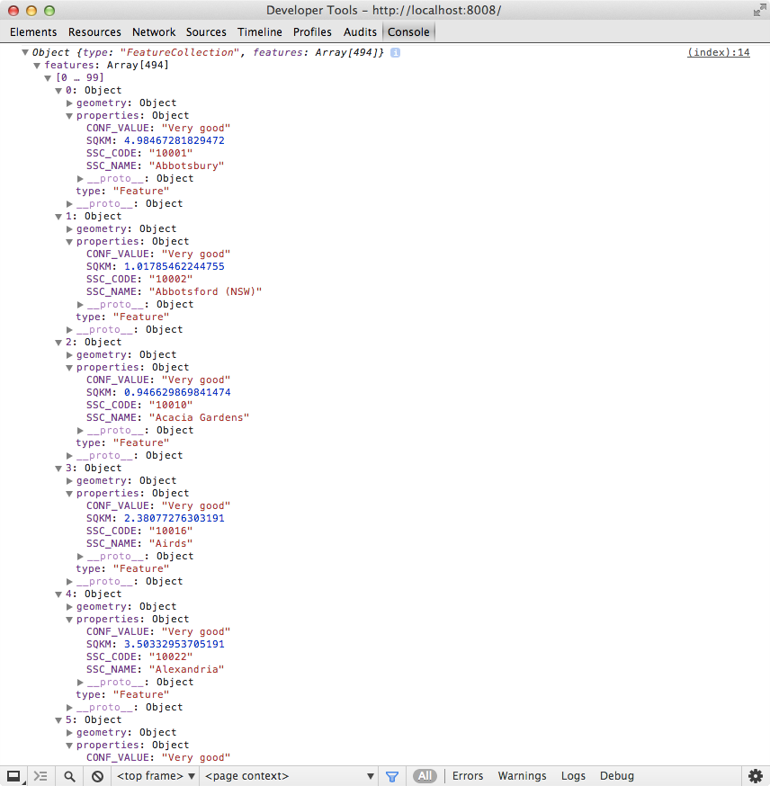
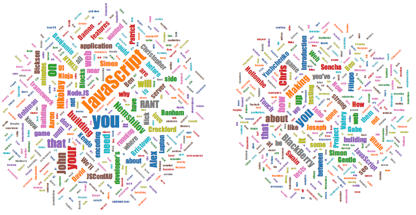

JavaScript Devs Don’t Get Lost
A (re-)introduction to mapping in the browser
Why yes, we’re hiring
- Lots of JavaScript, especially D3 and Node
- Lots of Python and R
- Duct tape (and Chef) holding together Redis, RabbitMQ, nginx
- Bits and pieces of C++, C#, Objective-C
www.datagami.info

You could always use Google Maps, right?
Art by Christoph Niemann at the Googleplex
If we just want a pretty picture,
we can use D3.js or Snap.svg / Raphaël
$ curl -Lo abs_suburbs.zip "http://www.abs.gov.au/AUSSTATS/subscriber.nsf/log?openagent&1270055003_ssc_2011_aust_shape.zip&1270.0.55.003&Data%20Cubes&D68DFFC14D31F4E1CA2578D40013268D&0&July%202011&22.07.2011&Previous"
$ unzip abs_suburbs.zip
$ ogr2ogr -f GeoJSON sydney.geojson SSC_2011_AUST.shp -clipsrc 150.84 -33.73 151.32 -34.09

d3.json("sydney.geojson", function(error, map_features) {
console.log(map_features);
});

var width = 900, height = 700;
var svg = d3.select("body").append("svg")
.attr("width", width)
.attr("height", height);
var projection = d3.geo.mercator()
.center([151.15, -33.90])
.scale(98000)
.translate([width / 2, height / 2]);
d3.json("sydney.geojson", function(error, map_features) {
svg.append("path")
.datum(map_features)
.attr("d", d3.geo.path().projection(projection));
});

var width = 900, height = 700;
var svg = d3.select("body").append("svg")
.attr("width", width)
.attr("height", height);
var projection = d3.geo.mercator()
.center([151.15, -33.88])
.scale(120000)
.translate([width / 2, height / 2]);
var path = d3.geo.path().projection(projection);
d3.json("sydney.geojson", function(error, map_features) {
svg.selectAll("path")
.data(map_features.features)
.enter().append("path")
.attr("class", "suburb")
.attr("d", path);
});

svg {
background: #deebf7;
}
path.suburb {
stroke: #d95f0e;
fill: #fff7bc;
}

But I want an interactive map!
One option is OpenLayers

Armchair Antarctica, GovHack Perth “best mapping application” winner
Mercator: not so good for the south pole
“No, I’m wondering where France really is.”

Leaflet: an awesome modern option
(for most use cases)
Shanghai and Zhejiang province, as seen through Mapbox
Leaflet maps are made of layers
(think Photoshop)

The tile layer can come
from several different providers

(... or you can roll your own)
Lots and lots of absolutely-positioned images
There’s a strong plugin community
Of course, the best maps are visualisations
An example from a low-tech source
(with thanks to Kinetic IT and Water Corporation)
Now for a more proximate example

I took the talk titles
from when SydJS was at
the old Atlassian building
words: [
"Archers", "vs", "Zombies!",
...
"BlackBerry",
...
"horrible", "kludges"
]
And the titles of more recent talks
here on George Street
words: [
"Faster,", "easier", "and", "safer",
...
"AngularJS",
...
"Tom", "Walker", "Cognizance"
],
Then I made a word cloud
jasondavies.com/wordcloud/
Why yes, I reinvented the (text-processing) wheel
var stopwords = ["and", "the", "with", "for", "to", "of", "in", "from", "a", "can", "but", "get", "an", "so"];
data.forEach(function(item) {
var word_hash = {};
item.words.forEach(function(word) {
if (stopwords.indexOf(word) !== -1) {
return;
}
if (word in word_hash) {
word_hash[word] ++;
} else {
word_hash[word] = 1;
}
});
var wordset = [];
for (var word in word_hash) {
wordset.push({ key: word, value: word_hash[word] });
if (word_hash[word] > max_count) { max_count = word_hash[word]; }
}
});
Using the WordCloud source, I rolled my own
(part 1)
var fill = d3.scale.category10();
var draw = function(word_data, svg_el) {
d3.select("body").append("svg")
.selectAll("text")
.data(word_data)
.enter().append("text")
.style("font-size", function(d) { return d.size + "px"; })
.style("font-family", "Impact, sans-serif")
.style("fill", function(d, i) { return fill(i); })
.attr("text-anchor", "middle")
.attr("transform", function(d) {
return "translate(" + [d.x, d.y] + ")rotate(" + d.rotate + ")";
})
.text(function(d) { return d.key; })
}
Using the WordCloud source, I rolled my own
(part 2)
var layoutWords = function(wordset, i, fontScale) {
var layout = d3.layout.cloud()
.size([450, 450])
.text(function(d) { return d.key; })
.font("Impact")
.fontSize(function(d) { return fontScale(+d.value); })
.rotate(function(d) { return ~~(Math.random() * 4) * 45 - 90; })
.padding(1)
.on("end", function(word_data) {
draw(word_data, g[i]);
})
.words(wordset)
.start();
}
var fontScale = d3.scale.log().range([5, max_count * 3]);
layoutWords(wordset, idx, fontScale);
This gives us two boring clouds
So let’s create a map!
<div id="map"></div>
<script src="http://cdn.leafletjs.com/leaflet-0.7.1/leaflet.js"></script>
<script>
var map = new L.Map("map", {center: [-33.8691, 151.20538], zoom: 17});
var tileLayer = new L.TileLayer(
"http://{s}.tile.cloudmade.com/API_KEY/998/256/{z}/{x}/{y}.png"
);
map.addLayer(tileLayer);
</script>
Then we get Leaflet’s overlay pane
map.getPanes().overlayPane
... and add an SVG element to it
var svg = d3.select(map.getPanes().overlayPane).append("svg");
bost.ocks.org/mike/leaflet/
Now render the clouds into that element
var fontScale = d3.scale.log().range([5, max_count * 3]);
wordsets.forEach(function(wordset, idx) {
g[idx] = svg.append("g")
.attr("class", "leaflet-zoom-hide");
layoutWords(wordset, idx, fontScale);
});
Maybe you noticed we didn’t
translate() those groups?
That’s because the map can pan and zoom!
We’ll respond to Leaflet movement events
map.on("moveend", resetSVG);
... with some slightly clunky code
var resetSVG = function() {
var ctopleft = map.containerPointToLatLng(
L.point(0,0)
);
var ltopleft = map.latLngToLayerPoint(ctopleft);
var cbottomright = map.containerPointToLatLng(
L.point(mapOriginalWidth,mapOriginalHeight)
);
var lbottomright = map.latLngToLayerPoint(cbottomright);
svg.style("left", ltopleft.x + "px")
.style("top", ltopleft.y + "px");
var zoom_level = Math.pow(2, (map.getZoom() - mapOriginalZoom));
for (var i = 0; i < g.length; i ++) {
var word_centre = map.latLngToContainerPoint(new L.LatLng(data[i].lat, data[i].long));
g[i].attr(
"transform", "scale(" + zoom_level + ")"
+ "translate(" + (word_centre.x / zoom_level) + "," + (word_centre.y / zoom_level) + ")"
);
}
}
There’s some glue code
to get everything started
var mapTopLeft = map.layerPointToLatLng(L.point(0, 0));
var mapBottomRight = map.layerPointToLatLng(L.point(
$("#map").width(),
$("#map").height()
));
var mapOriginalWidth = $("#map").width();
var mapOriginalHeight = $("#map").height();
svg .attr("width", mapOriginalWidth)
.attr("height", mapOriginalHeight)
.style("left", "0px")
.style("top", "0px");
resetSVG();
Et voilà!
hourann.com/2014/sydjs/leaflet-wordcloud.html
The Future

Better, cheaper imagery:
Skybox, Planet Labs, et al.
Vectors and The Third Dimension
New Google Maps has lidar / laser altimetry
plus Street View image processing
(like iOS Maps flyover, but with better data)
Thanks!
Questions?
These slides: hourann.com/2014/sydjs